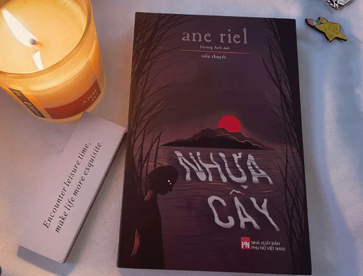

Có rất nhiều cuốn sách cuốn hút độc giả đắm chìm vào nó ngay từ câu mở đầu. Và Nhựa Cây của nhà văn Ane Riel đã cuốn hút độc giả vào cái hố đen, vào thế giới tăm tối, u ám của tình yêu thương theo cách như thế.
Liv, 6 tuổi, và cô bé đã chết. Ít nhất là trên giấy tờ, ít nhất là từ lời khai báo con gái mất tích khi đi biển của ông bố Jens Horder. Nhưng thực ra Liv đang lẩn trốn trong container ngay gần nhà. Bởi Jens cho rằng đó là cách tốt nhất để ông có thể bảo vệ Liv, là cách duy nhất để không ai có thể đưa Liv đi, cách duy nhất để Liv không rời bỏ bố mẹ, thậm chí chỉ là đi tới trường. Jens Horder là người mắc căn bệnh tích trữ. Nhà của Liv không khác chi một bảo tàng đồ cổ, một phiên chợ đồ cũ, hàng phế thải chất cao như núi đến tận nóc nhà, trong nhà chật kín không còn một lối đi nào, thậm chí cả ngoài sân cũng chật ních toàn đồ cũ. Dường như gia đình Jens Horder họ quá sợ hãi cô đơn, sợ hãi đến ám ảnh khi phải lìa xa ai đó. Đến nỗi tất cả mọi thứ trong gia đình Horder đều phải chật kín, chật ních vào. Không bỏ đi cái gì, không đánh mất cái gì, tất cả phải ở trong ngôi nhà ấy, tất cả phải gần gũi, thậm chí kể cả người chết cũng không đem chôn cất. Mà được ướp xác để mãi mãi ở bên cạnh người thân. Jens Horder xây dựng ngôi nhà của ông như pháo đài, nội bất xuất ngoại bất nhập. Thật tôi không thể hình dung chuyện gì sẽ xảy ra với Liv nếu cô bé tiếp tục sống cuộc sống ấy.

Nhựa Cây tuy chưa khiến tôi phải rơi nước mắt nhưng khi đọc truyện cảm giác rất lạ. Mỗi khi gấp sách lại tôi đều có một cảm giác khó tả, như kiểu vừa chứng kiến chuyện gì đó cực kỳ sốc vậy. Tôi không nói được gì, cứ ngơ ngơ, phải mất một lúc mới bình thường lại. Ane Riel bằng giọng văn lạnh lẽo, pha chút hài hước thơ ngây của Liv, đã vẽ nên một gia đình luôn yêu thương nhau hết mực, nhưng rồi chính yêu thương ấy đã hủy hoại tất cả. Yêu thương nhưng chiếm hữu, yêu thương nhưng đến nỗi thành ám ảnh điên loạn. Những chi tiết đau xót như cảnh Liv chứng kiến bố giết bà nội, cảnh Liv từ container chạy vào nhà ôm lấy mẹ rồi òa lên khóc vì quá cô đơn, cảnh Liv giấu Jens mang một con thỏ vào container, bất chấp nguy cơ bị lộ tẩy, chỉ vì Liv muốn vuốt ve một thứ và nó cũng có thể vuốt ve lại em, cảnh Liv chứng kiến bố ướp xác em gái sơ sinh và cảnh Liv nầm trong container bên cạnh cái quan tài be bé của em gái. Từng món đồ thải chật kín khắp trong nhà ngoài sân, ngay cả đám động vật trong chuồng gia súc, hầu như chật sát sạt vào với nhau, hầu như không hề có một không gian rộng rãi, thoáng đạt, tự do nào cho các nhân vật trong nhà Horder. Họ đã biến hòn đảo của gia đình mình thành ốc đảo tách biệt, họ xa cách tất cả. Phải chăng vì thế mà càng lớn lên Liv càng cảm thấy cô đơn khủng khiếp. Cuộc sống của em chỉ gói gọn trong ngôi nhà chật chội với bố, mẹ và Carl còn quá bé. Ngày ngày chứng kiến những nỗi đau Liv biết có cái gì đó không đúng, nhưng em không biết cái gì là đúng cái gì là sai. Em chỉ biết mọi điều bố hay mẹ làm đều đúng vì bố mẹ yêu em và em yêu bố mẹ. Cũng vì quan điểm lạ đời của Jens mà Liv từ nhỏ đến lớn chỉ biết có những người thân xung quanh mỉnh. Với Jens thì đó là một thế giới hoàn hảo cho Liv, ông muốn xây dựng một thế giới chỉ có tình thương tồn tại, tất cả mọi việc ta làm trong thế giới ấy đều bắt nguồn từ tình yêu thương, kể cả giết người. Liv cứ thế sống trong tình yêu thương mơ hồ ấy của Jens. Rồi đến lượt em cũng thế khi mãi mãi ôm bên người thi hài đứa em gái song sinh, vì em cũng như Jens em sợ mất mát, em sợ hãi cô đơn, em sợ hãi cái nỗi cô đơn mà chính Jens đã tạo ra trong nhà mình. Điều tôi ngạc nhiên nhất là chuyện bố con Jens đi xoáy đồ ăn, đồ gia dụng từ nhà người khác. Đúng là gia đình Jens không muốn bất kỳ thứ gì từ trong nhà mình ra đi, từ đồ đạc, súc vật cho đến cả người. Một gia đình trộm đạo! Một gia đình Horder đúng là độc đáo chưa từng thấy.
Khi đọc trong óc tôi hiện lên bao nhiêu câu hỏi to đủng. Tại sao Jens giết mẹ mình? Tại sao Jens lại không làm điều gì đó cho Maria? Tại sao Maria vẫn phải nằm liệt giường với tấm thân phì nộn như thế? Tại sao khi Maria sinh tiếp đứa nữa Jens không đưa cô tới bệnh viện hay mời bác sĩ đến? Tại sao và tại sao? Bi kịch nối tiếp bi kịch nhưng họ không thể thoát ra. Bà nội, Maria rồi cả đến Liv đều không muốn sống kiếp sống như Jens nhưng họ không thể làm tổn thương ông. Nhẽ ra họ phải quyết liệt hơn vì nhau đưa tất cả đi thoát, thoát thật xa khỏi kiểu tình yêu đầy chiếm đoạt, đầy bệnh hoạn như Jens. Nhưng oan nghiệt thay, thứ ràng buộc tất cả họ là tình yêu thương, nhưng cũng chính nó giết chết từng người một trong cả cái gia đình ấy. Như Nhựa Cây! Nó dính dớp, một khi đã sa chân vào đó sẽ không tài nào thoát ra. Giống như con kiến! Đôi khi tình yêu là sức mạnh, đôi khi tình yêu là điều đáng sợ khi nó biến thảnh sở hữu. Gia đình là nguồn sức mạnh tinh thần to lớn nhưng đôi khi gia đình lại là nhà tù không lối thoát. Chưa bao giờ hai chữ Yêu Thương lại mang một bộ mặt kinh hoàng, ghê rợn đến thế như trong Nhựa Cây. Chính vì yêu thương mà các thành viên quan tâm nhau, giúp đỡ và bảo vệ nhau nhưng cũng vì yêu thương họ chấp nhận cầm tù chính mình và tất cả.
"Mẹ không biết chuyện này sẽ kết thúc thế nào. Xét cho cùng mẹ chỉ biết những gì con nói cho mẹ biết, và mẹ có cảm giác rằng con không kể hết mọi chuyện với mẹ. Rằng mọi thứ đang đi sai hướng. Mẹ linh cảm rằng có những chuyện xảy ra bên ngoải cái phòng ngủ này mà mẹ không được cho biết. Những chuyện lé ra không được phép đi đến nước này. Thế nhưng mẹ không thể hổi tiếc vì đã yêu bố con."
Đến cuối truyện tác giả đã làm một cú bẻ ngoặt như một sự cứu rỗi cuộc đời Liv. Liệu rằng cuộc đời em từ đó trở đi liệu có thực sự sang trang mới? Tôi mong như thế và tôi mong Liv sẽ không có kiểu tình yêu chiếm hữu đến bệnh hoạn như Jens. Nhưng khi đọc tới dòng cuối cùng gấp sách lại tôi bỗng nghi ngờ điều ấy. Liệu Liv có giống Jens hay không? Nhưng tôi vẫn hy vọng giờ đây cuộc đời em sẽ khác. Tôi chỉ hy vọng như thế, dù rằng nỗi ám ảnh vẫn bủa vây lấy tôi kể cả khi đã gấp sách lại.
"Nhựa cây có thể chữa lành và bảo vệ nhưng cũng có thể giết chóc. Điều đó mê hoặc Jens Horder."
Không hiểu tại làm sao mà Nhựa Cây lại là tác phẩm kén người đọc đến thế. Tìm trên Google và FB tôi chỉ thấy lác đác review về nó. Một tác phẩm khắc họa kiểu tình yêu thương điên loạn, chiếm đoạt, sở hữu để rồi chết vì chính tình yêu thương này rất đáng để mọi người thử tìm đọc. Sách biên tập tốt, dịch tốt thế này mà ế thì quá phí đi!
Edogawa Ranpo tạo ra Đảo Quỷ với kết cấu nửa như tự sự, nửa tiểu thuyết tạo sự mới lạ và độc đáo. Nhân vật chính Minoura một thanh niên hiền lành, có phần yếu đuối, anh đem lòng yêu Kizaki Hatsuyo xinh đẹp và cứ ngỡ rằng
Những vần thơ khó hiểu của Thợ Đồng Hồ xuất hiện bên cạnh xác chết của một trong những vụ giết người hàng loạt kinh hoàng do hắn gây ra khắp New York. Lincoln Rhyme và Amelie Sachs cùng các trợ thủ khác của hai người
Truyện của Edogawa Ranpo mình mới đọc mỗi Người Báo với Đảo Quỷ và rất ấn tượng với phong cách trinh thám pha lẫn kinh dị biến thái kỳ bí của ông. Gọi là tiểu thuyết kinh dị cũng được mà tiểu thuyết trinh thám cũng xong
Sau cuộc nội chiến, người Osage, được xem là bộ tộc da đỏ hùng mạnh nhất thời bấy giờ, bị Chính phủ Mỹ cưỡng ép phải tha hương. Tới miền Tây Oklahoma, cứ ngỡ rằng đây sẽ là vùng đất khô cằn sỏi đá
Ba mươi năm trước bài sấm này vốn chỉ có bốn câu thơ đầu đánh dấu sự thay đổi triều đại từ Tiền Lê sang nhà Lý. Không ai ngờ vào thời vua Lý Thái Tông ba mươi năm sau thì cây gạo làng Diên Uẩn
Ngủ Cùng Người Chết bắt đầu với nhân vật Linh. Một lần trong đêm mưa gió ở miền biên giới phía Bắc heo hút, có một gia đình vào nhà cô xin trú nhờ. Gồm ông bố bà mẹ béo mập và một đứa con trai nhỏ tuồi